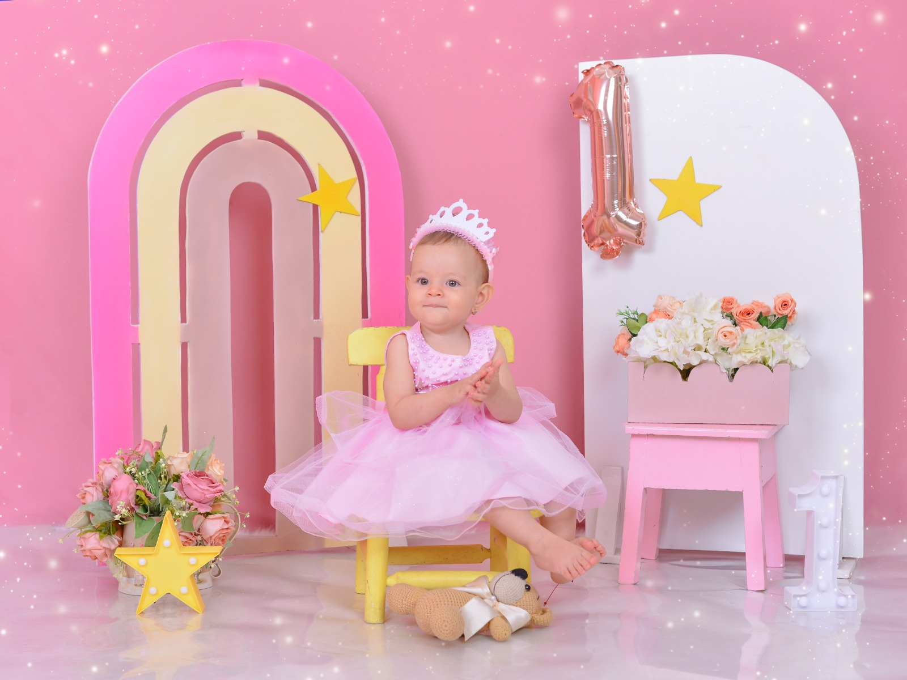
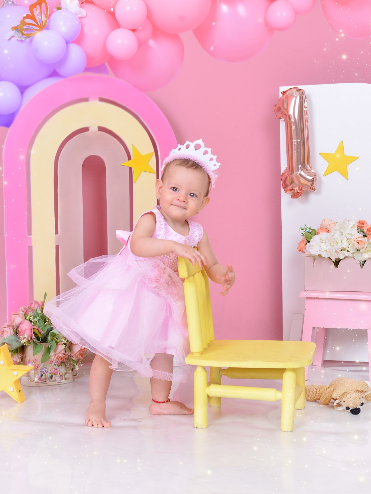
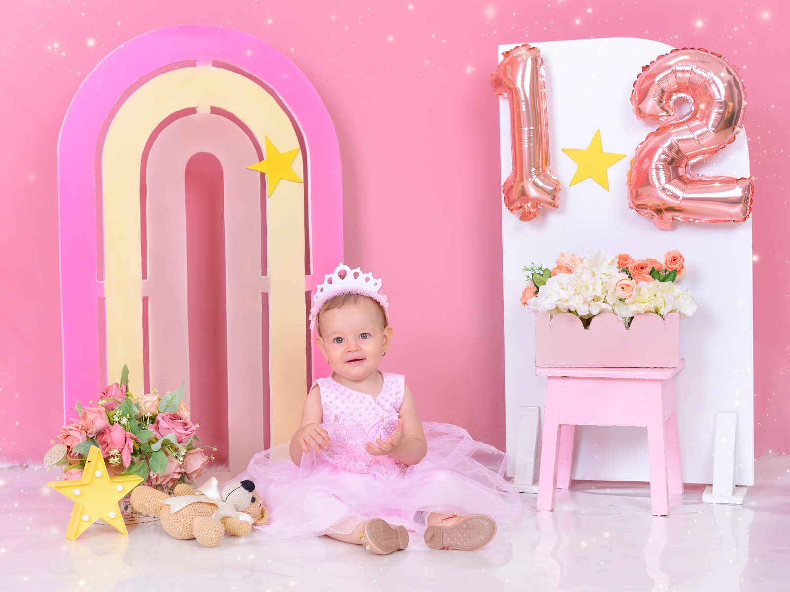
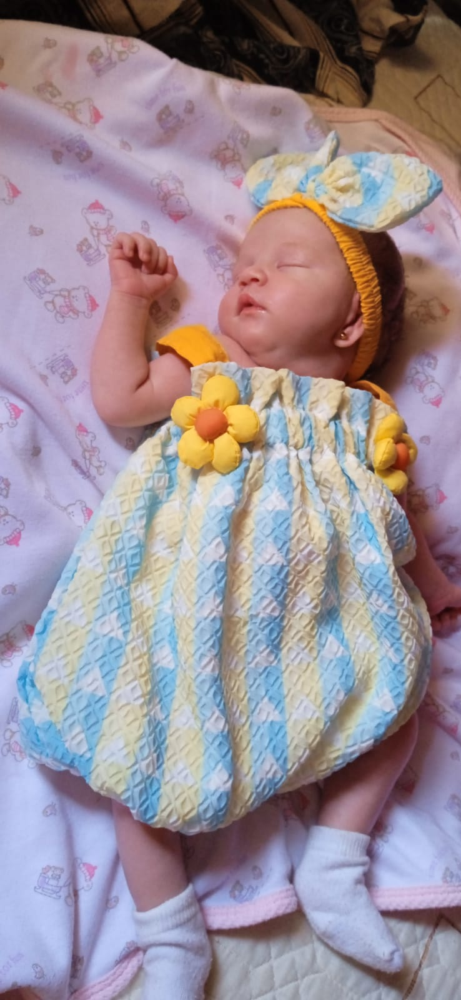
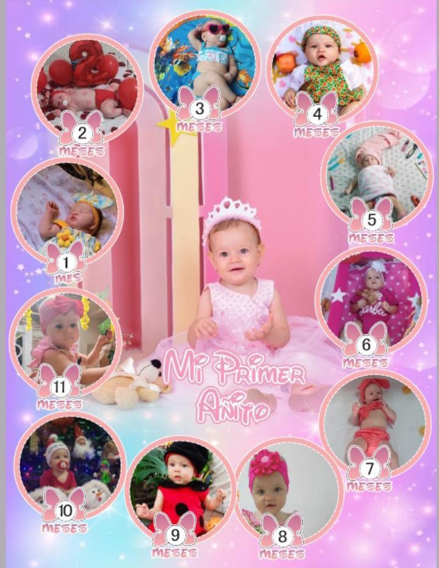
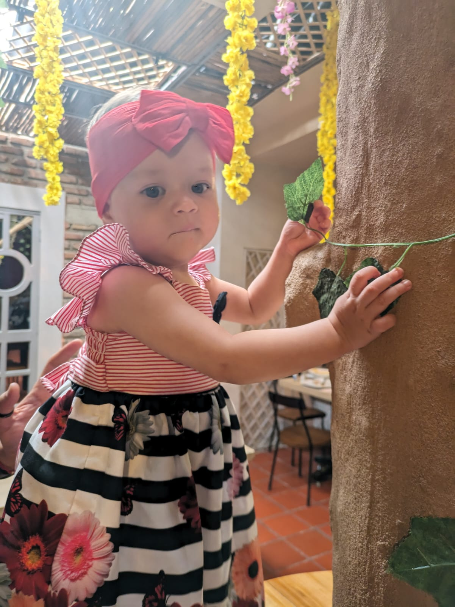
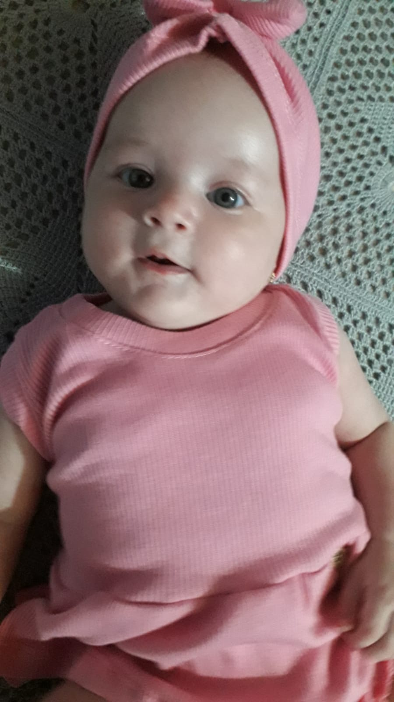

Objetos fundamentales para el primer año de tu bebé
Existen tantísimas opciones de productos para bebé que escoger los que necesitas para tu lista puede ser una verdadera odisea, sobre todo si eres una madre o un padre primerizo. Resulta muy difícil saber qué objetos son de verdad indispensables y cuáles opcionales, ¿no es cierto?
Las mejores cosas para bebés de 2024
Si estás buscando las mejores cosas para bebés, estás en el sitio indicado. Muchos futuros padres no saben por donde empezar con sus listas de nacimiento o necesitan un poco de ayuda para decidirse
Las mejores almohadas para la plagiocefalia
¿Has escuchado hablar de las almohadas para la plagiocefalia? Seguramente, no, a menos que el médico te haya aconsejado comprar una. Si no tienes ni idea de qué estamos hablando, pero te ha picado la curiosidad, continúa leyendo porque te lo contamos todo de este problema.
Las mejores ideas para los chupeteros de tu peque
El chupete es un gran aliado en muchísimos momentos. Tal vez te preocupe como mantenerlo al alcance de tu bebé y garantizar qué, si se le cae, no toque el suelo. Para eso están los chupeteros. Te damos unas cuantas ideas de qué buscar.
¿Conviene que mi bebé duerma un rato boca abajo para prevenir la plagiocefalia?
La Academia Americana de Pediatría, así como la Sociedad Española de Pediatría, recomiendan colocar al bebé boca arriba, de espaldas al colchón y con la cabeza ladeada a la hora de dormir.
¿Qué es la lactancia mixta y cómo llevarla a cabo?

La experiencia única de cada madre en el camino de la maternidad nos enfrenta a desafíos y decisiones que, a menudo, nos llevan por caminos inesperados. Con mi segundo hijo, me encontré navegando por las aguas de la lactancia con nuevos retos
¿Cuándo es conveniente empezar a pensar en la lista de nacimiento?
No existe una fecha exacta para abrir la lista de nacimiento. De hecho, puedes crearla cuando tú lo desees. Ahora bien, una cosa es empezarla y otra bien distinta comenzar a compartirla con tus allegados. ¿Por qué ir con prisas? Puedes comenzar a investigar poco a poco a partir del quinto o sexto mes y esperar a compartirla con los familiares y amigos cuando el embarazo esté avanzado; es decir, sobre el inicio del séptimo mes del embarazo.
Guía para que tu bebé duerma seguro
El sueño del bebé es uno de los temas que mayor preocupación nos genera a los padres. ¿Cuánto debe dormir según su edad? ¿Cuándo comenzará a hacerlo seguido toda la noche? ¿Debería dormir en una cuna en nuestra habitación o en su propia habitación? Las dudas son múltiples y, en muchos casos, no se obtienen respuestas porque ¡cada niño es un mundo y, por lo tanto, sus necesidades son diferentes!
Los mejores arrullos para tu bebé

¿Te has fijado alguna vez en esos bebés tan pequeñitos que están envueltos como un taco mexicano? ¿Has visto lo plácidamente que duermen? Los arrullos para bebé sirven, precisamente, para arropar bien firmemente a recién nacidos y bebés. Quizás te parezca extraño, pero sentirse un poco comprimidos les relaja, ya que les recuerda la falta de espació que tenían en el vientre materno.